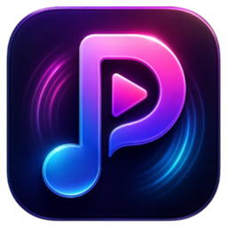
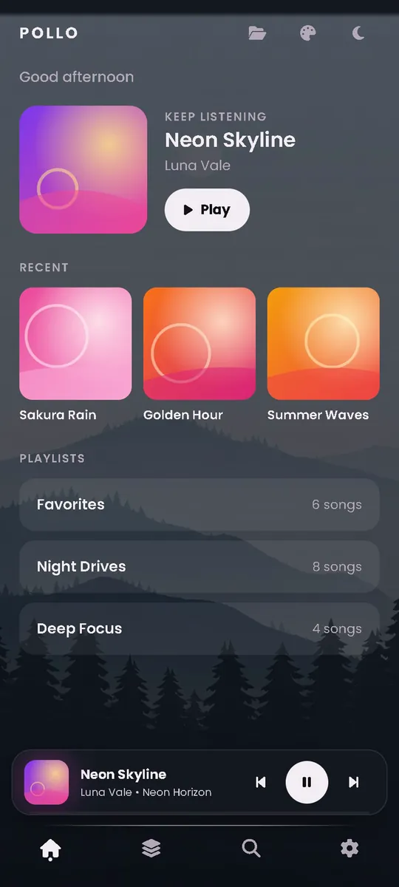
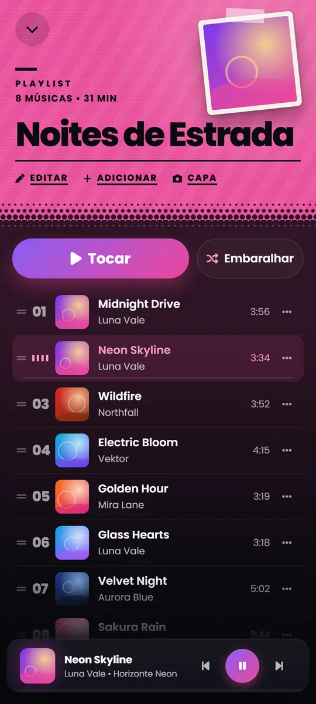
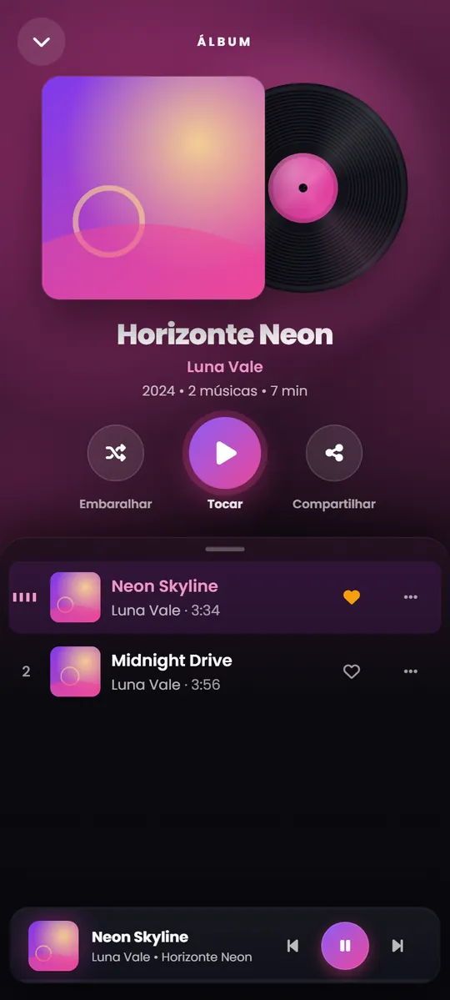
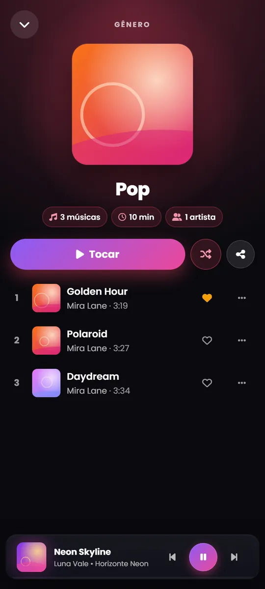
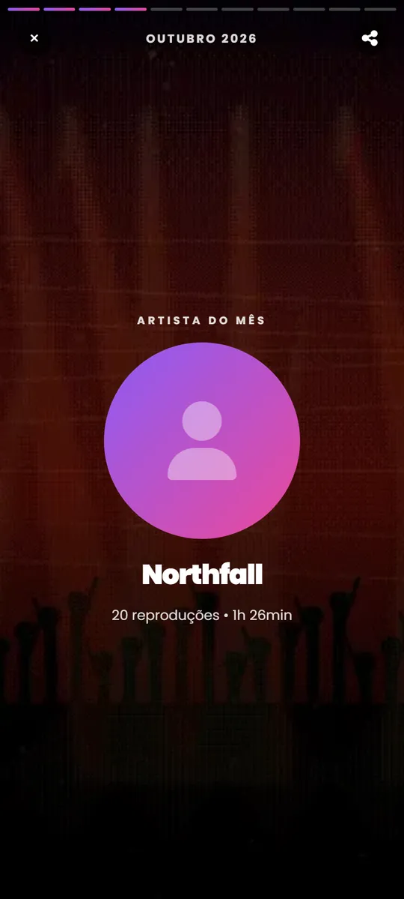
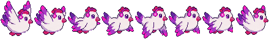

Sem pausas e nativo
Reprodução sem pausas entre faixas, em segundo plano, tela de bloqueio, Bluetooth e widget.

POLLO English BaixarO POLLO toca as músicas que já estão no seu celular — MP3, FLAC e mais — sem anúncios, sem conta e sem rastreamento. E com uma cara que nenhum outro player do Android tem.
Grátis · Sem anúncios · Android 6.0+
Funções
E algumas coisas que nenhum outro tem.
Reprodução sem pausas entre faixas, em segundo plano, tela de bloqueio, Bluetooth e widget.
Predefinições, crossfade, velocidade, repetição A-B e marcadores.
Modo karaokê e romanização do japonês. A letra só é buscada quando você pede.
Em minutos ou "fim da música": abaixa o volume e pausa, mesmo com o app fechado.
Guarde um trecho ou tire a introdução. Vira uma faixa nova.
Barras, ondas, anéis e mais, reagindo à música.
37 para desbloquear. A cada 2 conquistas, um item Premium de graça.
Palavras mágicas na busca, toques no logo, chacoalhar o celular… quem procura acha.
Temas
Os temas mudam o app inteiro: fundo, cartões, mini player e animações.

Só o que importa: uma paisagem pintada e calma, uma tela inicial limpa e nada no caminho. Claro e escuro.
Biblioteca
Músicas, álbuns, gêneros e pastas, cada um com a sua cara.




Retrospectiva
Por que esperar dezembro? O POLLO transforma o que você ouve em stories de tela cheia para compartilhar: músicas mais tocadas, artista do mês, horas ouvidas, sequências e a sua "vibe" musical, cada uma com a sua pintura.
Privacidade
O POLLO é um player, não um serviço. Sua música nunca sai do seu celular.
Abra e toque. Nada para criar, nada para sincronizar.
Não há nenhum SDK de rastreamento no app, nem relatório de falhas.
Quando você busca uma letra sincronizada, o POLLO consulta o lrclib.net só com o título e o artista.
Premium
O player é 100% grátis e sem anúncios. O POLLO Premium é uma compra única e opcional, não uma assinatura.
Dúvidas
Não. O POLLO toca os arquivos de música que já estão no seu celular (MP3, FLAC, WAV, M4A, AAC, OGG, OPUS, WMA). Ele não faz streaming nem baixa música.
Sim. Tudo o que um player precisa é grátis e não tem anúncios. O Premium é uma compra única e opcional, para visuais extras e a retrospectiva do mês e do ano.
Não. Não tem login, cadastro nem nuvem. Sua biblioteca, playlists e favoritas ficam no seu celular.
Android 6.0 ou mais novo.
Desbloqueie todas as conquistas normais: o Shinobi é o troféu. Ele não faz parte do Premium.
26: português, inglês, espanhol, francês, alemão, italiano, holandês, polonês, romeno, russo, ucraniano, grego, turco, hindi, bengali, tâmil, telugo, indonésio, malaio, filipino, vietnamita, tailandês, japonês, coreano e chinês (simplificado e tradicional).
